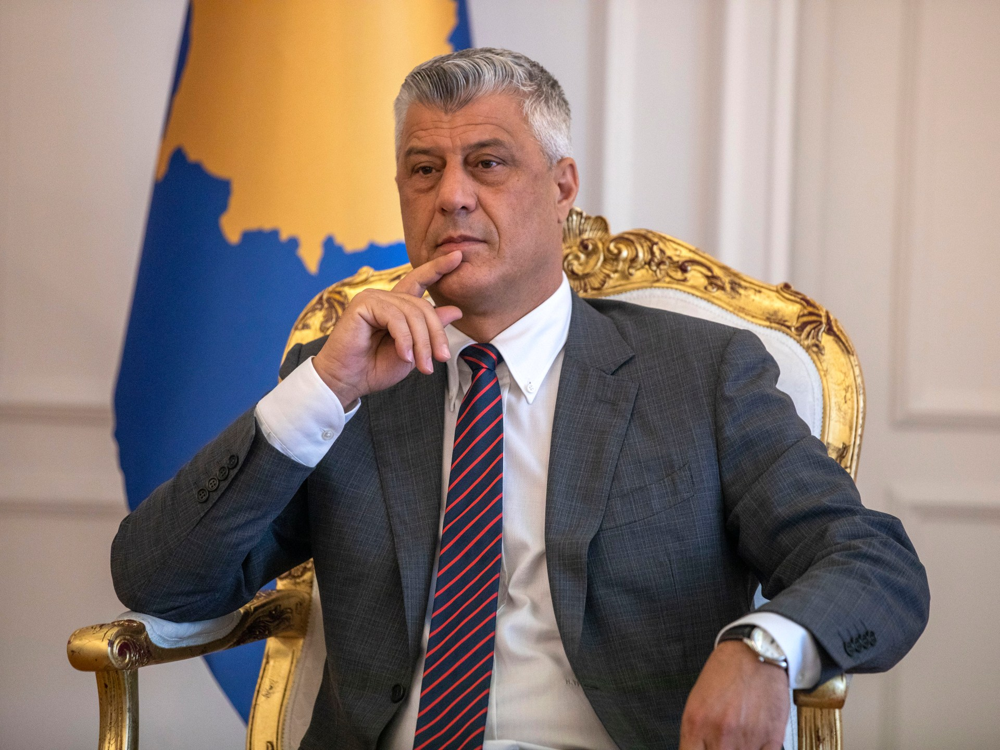
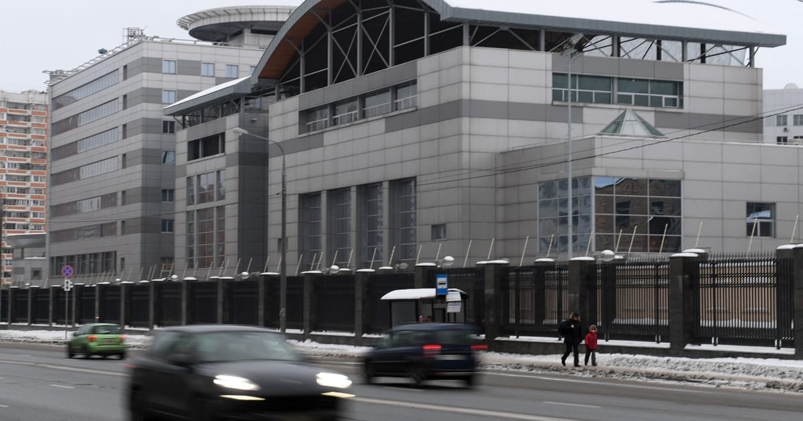
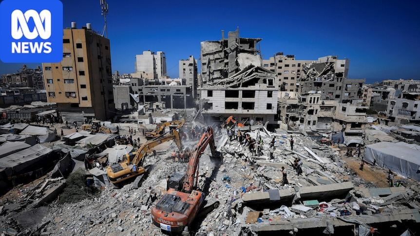
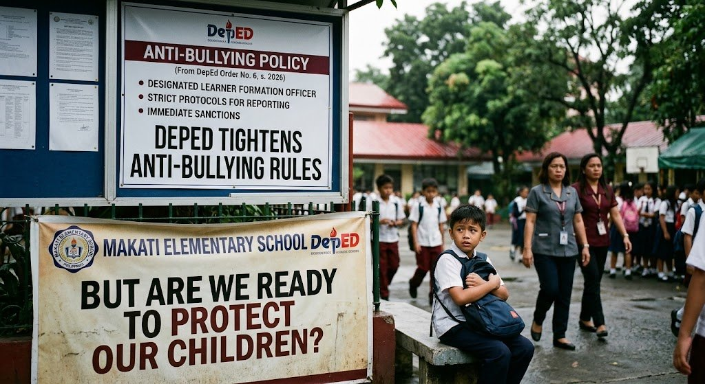

Saudis pound Yemen as Houthis hit back; oil routes under strain
16–17 Sep 2026
ABC / Reuters: Saudi warplanes intensified strikes on Houthi positions while Iran-backed fighters launched drones and missiles at Saudi cities. Pipeline hits have disrupted up to about 4% of global oil shipments on top of Hormuz pressure from the wider Iran war. Washington tightened its Saudi travel warning near the Yemen border and stays out of direct intervention. US Energy Secretary Chris Wright said East–West crude flow should resume within days — traders are less sure.
Open ABC · Open Reuters

Hashim Thaçi sentenced to 25 years for KLA-era war crimes
16 Sep 2026
Reuters / Al Jazeera / Kosovo Specialist Chambers: Former Kosovo president Hashim Thaçi was convicted in The Hague of war crimes including murder of 96 people, arbitrary detention of 385, torture of 303, and cruel treatment of 49 during the 1998–99 conflict. Crimes-against-humanity counts were dismissed. Prosecutors had sought 45 years; the verdict can be appealed. Pristina protests; Belgrade calls it too light.
Open Reuters · Open Al Jazeera

US charges five in alleged Russian murder-for-hire and terror plot
16 Sep 2026
Bloomberg / POLITICO: SDNY unsealed charges against five people allegedly working for Russian intelligence — conspiracy to finance terrorism and, for three, murder for hire. Cases include a $25,000 offer to kill a dissident in Lithuania and planning attacks on infrastructure in Ukraine-aligned states. All five remain at large. Timing lands beside Leipzig drone blame, Baltic flare incidents, and NATO drone intercepts.
Open POLITICO · Open Bloomberg

War-damaged Gaza apartment block collapses; death toll climbs
16–17 Sep 2026
ABC / AA / France24: A previously strike-damaged building in western Gaza City collapsed overnight. Early Reuters tallies put 12 dead including children and dozens trapped; later ABC/France24 reporting raised the toll toward 20–21 with many still missing. Rescuers dug by hand amid scarce heavy machinery. About 2,000 damaged buildings still shelter families.
Open ABC · Open Anadolu

DepEd ESMLE: progressive penalties, anonymous reporting, CPC first response
1–16 Sep 2026
Manila Times / MB / Newsline: DepEd Order No. 006, s. 2026 (ESMLE) sets progressive discipline for bullying and campus threats — counseling for minor acts; up to five-day suspension plus DSWD referral for repeated/online harassment; non-readmission or exclusion and PNP turnover for high-risk violence or bomb threats. Child Protection Committees must investigate, protect victims, and offer psychosocial support. Newsline (16 Sep) flags the real test: whether kids feel safe enough to report while cases run.
Open Newsline · Open Manila Times
Eala rises to projected No. 3 seed in Singapore WTA 500
15–16 Sep 2026
GMA / Reuters / Straits Times: World No. 18 Alex Eala is projected as the No. 3 seed at the Singapore Open (21–27 Sep) after Jessica Pegula withdrew. Top seeds: Mirra Andreeva, Amanda Anisimova. After Singapore she flies to Aichi-Nagoya for Asian Games tennis; PHILTA has asked the WTA to waive the mandatory China Open clash — fine/zero-point risk still live if the exemption fails.
Open GMA · Open Reuters

Starship Flight 14: FAA window Sep 22, first orbit try
15–16 Sep 2026
Space.com / SpaceX / FAA advisory: Flight 14 is listed for Sep 22 (window from 7:15 a.m. CT; Sep 23 backup) as Starship’s first planned orbital mission after 13 suborbital flights. Ship aims for about six orbits near 275 km, deploy 26 Starlink V3 (~26 Tbps capacity add), then Pacific splashdown west of Chile. Booster stays a Gulf splashdown; catch and refueling stay later.
Open Space.com · Open SpaceX
Garmin Cirqa 3.20: BLE HR pairing mode, button start, alarm fixes
3 Sep 2026 (live desk)
Gadgets & Wearables: Firmware 3.20 adds BLE heart-rate pairing while broadcasting, configurable single-press or press-and-hold activity start, treadmill recalibration after 1.5 km, and alarm/battery cleanup (10% low / 5% critical). It follows 2.50 reports that Bluetooth HR broadcast dropped for Zwift, TrainerRoad, and Rouvy while ANT+ held. Rollout started at 20% — watch whether dropouts actually clear.
Open Gadgets & Wearables